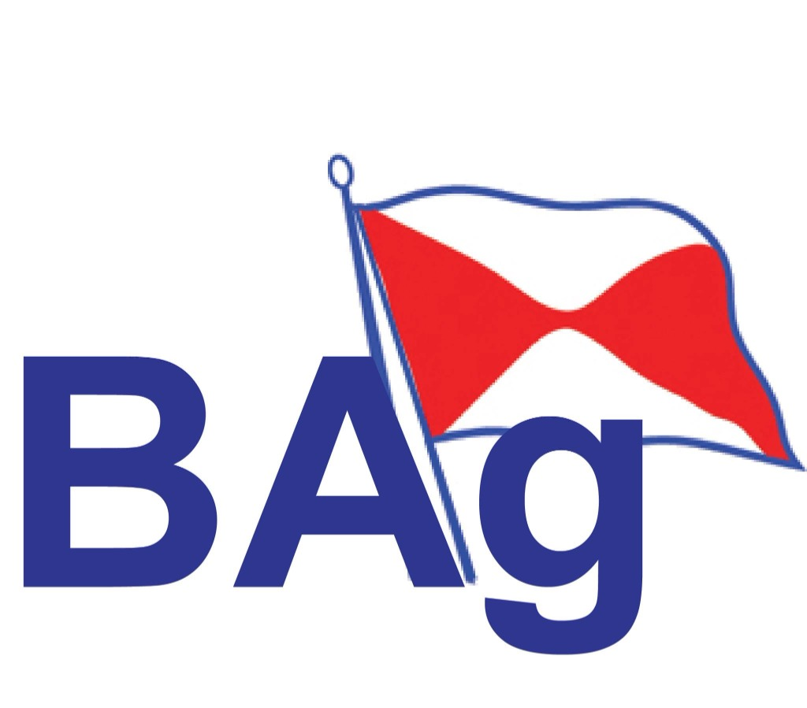

| Atribut | Keterangan |
|---|---|
| Judul Dokumen | Buku Panduan Penggunaan (Manual Book) WMS PT. Pelayaran Bahtera Adhiguna |
| Nama Aplikasi | BAg Logistics WMS — Maritime Logistics and Spares Warehouse (Mare-WMS) |
| Pemilik Sistem | Divisi Logistik — Gudang Merak, PT. Pelayaran Bahtera Adhiguna |
| Administrator Sistem | Super Admin WMS |
| Sasaran Pembaca | Petugas Gudang, Kepala Gudang, Manager Logistik, VP Rendalhar, Superintendent, Kru Kapal, dan Super Admin |
| Platform | Aplikasi web (browser) — dapat diakses dari komputer dan perangkat seluler |
| Versi | Tanggal | Uraian Perubahan | Disusun Oleh |
|---|---|---|---|
| 1.0 | Oktober 2026 | Penerbitan pertama buku panduan. Mencakup seluruh modul WMS hasil analisis kode sumber aplikasi. | Tim IT WMS |
| Disusun Oleh | Diperiksa Oleh | Disetujui Oleh |
|---|---|---|
| Super Admin WMS | Kepala Gudang | Manager Logistik |
Warehouse Management System (WMS) PT. Pelayaran Bahtera Adhiguna adalah aplikasi berbasis web untuk mengelola seluruh siklus logistik suku cadang (spare parts) dan material armada kapal — mulai dari pendaftaran master barang, penerimaan barang dari vendor, permintaan barang oleh kapal, pengeluaran barang dari gudang, pengembalian sisa material, hingga pelaporan mutasi stok.
Sistem ini mengadopsi standar dokumen gudang perusahaan yang dikenal sebagai TUG:
| Dokumen | Nama Resmi | Fungsi di WMS |
|---|---|---|
| TUG 5 | Daftar Permintaan Barang-Barang (Material Umum) | Permintaan suku cadang/material dari kapal (diajukan Chief Engineer) untuk kebutuhan operasional armada. |
| TUG 6 | Daftar Permintaan Barang-Barang (Sparepart) | Permintaan suku cadang, termasuk pemantauan khusus suku cadang Critical berdasarkan SPK. |
| TUG 8 | Bon Pengeluaran / Spare Part Note & Surat Jalan | Pengeluaran fisik barang dari gudang ke kapal. Saat berstatus Dispatched, stok gudang otomatis dipotong. |
| TUG 10 | Bon Pengembalian Bahan & Suku Cadang | Pengembalian sisa/barang tidak terpakai dari kapal ke gudang. Saat disetujui, stok gudang otomatis bertambah. |
| TUG 11 | Laporan Mutasi Barang Keluar Masuk | Laporan analitik mutasi stok harian/periodik dan rekap per SPK. |
| SPK | Surat Perintah Kerja (Work Order) | Paket penugasan penyiapan (picking) barang untuk satu atau lebih kapal di pelabuhan tujuan. |
| Komponen | Spesifikasi yang Disarankan |
|---|---|
| Perangkat | PC/Laptop (disarankan untuk input data), tablet, atau smartphone (untuk scan QR & foto bukti fisik) |
| Browser | Google Chrome, Microsoft Edge, atau Mozilla Firefox versi terbaru |
| Resolusi Layar | Minimal 1366 × 768 piksel; ideal 1920 × 1080 piksel |
| Koneksi | Internet/jaringan kantor yang stabil (data tersinkron ke server & cloud storage) |
| Printer | Printer A4 untuk mencetak dokumen TUG, Surat Jalan, Lembar Picking, dan Label Barcode/QR |
| Opsional | Scanner barcode 1D/QR genggam; kamera perangkat untuk foto bukti penerimaan |
| Istilah | Penjelasan |
|---|---|
| SKU | Stock Keeping Unit — kode unik internal suku cadang (contoh: SKU-ME-PST-05). |
| Part Number (PN) | Nomor part asli dari pabrikan (maker). |
| PO | Purchase Order — nomor pesanan pembelian ke vendor. |
| DN / Surat Jalan | Delivery Note — nomor surat jalan pengiriman dari vendor. |
| WO | Work Order / Perintah Kerja; di WMS biasanya merujuk ke nomor SPK atau PO Inbound. |
| Inbound | Barang masuk ke gudang (Receiving). |
| Outbound | Barang keluar dari gudang (Dispatch / TUG 8). |
| Ledger / Kartu Stok | Catatan audit setiap mutasi stok: jumlah masuk/keluar, stok sebelum dan sesudah, nomor referensi, operator. |
| Reorder Point | Batas stok yang memicu peringatan untuk pemesanan ulang. |
| Reserved Stock | Stok yang dicadangkan untuk pengiriman yang sedang diproses (Picking/Packed/Ready To Dispatch). |
| Kode Akun / Fungsi | Kode pembebanan akuntansi (default BPP) dan fungsi layanan (default ARMADA). |
| TTD Digital | Tanda tangan elektronik pejabat yang otomatis disisipkan pada dokumen cetak. |
| Nihil | Laporan kosong resmi (tidak ada transaksi) yang tetap dapat dicetak untuk keperluan pelaporan. |
Setiap akun pengguna memiliki satu peran yang menentukan menu dan tindakan yang dapat dilakukan. Peran dikelola oleh Super Admin melalui menu Database User & Role.
| Peran | Tanggung Jawab Utama |
|---|---|
| Super Admin | Pemilik sistem. Akses penuh ke seluruh modul, termasuk menu eksklusif: Critical Spare Parts TUG 6, Login & Logs Audit, Mode Maintenance, hapus suku cadang dari katalog, dan Push barang Inbound ke Master. |
| Petugas Gudang | Operator gudang harian: penerimaan barang, pembuatan dokumen, picking, dan TTD Tahap 1 (pemeriksa/penyerah). |
| Kepala Gudang | Mengawasi operasional gudang dan memberikan TTD Tahap 2 (menyetujui). |
| Manager Logistik | Persetujuan tingkat manajerial, TTD Tahap 3. |
| VP RENDALHAR | Pengesahan akhir dokumen, TTD Tahap 4. |
| Verifikator Rendalhar (L1) | Verifikasi tingkat pertama dokumen TUG. |
| Superintendent | Pemeriksa/verifikator TUG dari sisi teknis armada. |
| Warehouse Admin | Administrasi data gudang (peran default bila peran tidak dikenali). |
| Vessel Crew | Kru kapal; melihat dan mengajukan permintaan untuk kapalnya. |
Alur persetujuan dokumen TUG terikat pada pejabat berikut. Username digunakan untuk login; password diberikan oleh Super Admin dan wajib dijaga kerahasiaannya.
| Tahap | Nama Pejabat | Jabatan | Username |
|---|---|---|---|
| 1 | Aldi Hidayat | Petugas Gudang (Pemeriksa / Penyerah) | aldi |
| 2 | Maghfur Muhammad Alfin | Kepala Gudang (Menyetujui) | alfin |
| 3 | Mohamat Emir Ferdian | Manager Logistik | emir |
| 4 | Sumbono | VP Rendalhar (Pengesahan) | sumbono |
| — | Fikri Haikal | Super Admin (Pemilik Sistem) | superadmin |
Keamanan: Segera ganti password bawaan setelah login pertama melalui Super Admin. Jangan pernah meminjamkan akun — setiap TTD digital tercatat atas nama pemilik akun.
Dokumen TUG 5, TUG 6, TUG 8, dan TUG 10 wajib melalui persetujuan berjenjang. Setiap tahap hanya dapat dilakukan oleh pejabat yang berwenang (atau Super Admin), dan secara berurutan:
| Menu / Fitur | Super Admin | Petugas / Kepala Gudang | Manager / VP | Superintendent / Crew |
|---|---|---|---|---|
| HQ Dashboard | Penuh | Penuh | Penuh | Lihat |
| Spare Part Master & Catalog | Penuh + Hapus | Tambah / Ubah | Lihat / Ubah | Lihat |
| Stock Ledger Trail | Lihat | Lihat | Lihat | Lihat |
| TUG 5 / TUG 6 | Penuh + semua TTD | Buat, Proses, TTD Tahap 1–2 | TTD Tahap 3–4 | Buat / Lihat |
| Receiving (Inbound) | Penuh + Push Master | Penuh | Lihat | — |
| Dispatch TUG 8 | Penuh + semua TTD | Buat, Ubah Status, TTD 1–2 | TTD Tahap 3–4 | Lihat |
| Pengembalian TUG 10 | Penuh + semua TTD | Buat, Verifikasi, TTD 1–2 | TTD Tahap 3–4 | Buat |
| SPK & Laporan | Penuh | Penuh | Penuh | Lihat |
| Database Kapal, User, TTD Digital | Penuh | Sesuai izin | Sesuai izin | — |
| Critical Parts, Login Logs, Maintenance | Eksklusif | — | — | — |
| Pesan Kesalahan | Penyebab & Solusi |
|---|---|
| Harap masukkan Username. / Harap masukkan Password. | Kolom masih kosong — lengkapi isian. |
| Username atau Password salah. | Periksa ejaan dan tombol Caps Lock. Hubungi Super Admin untuk reset password. |
Sesi tersimpan: Setelah login, sesi diingat di browser. Membuka ulang aplikasi akan langsung masuk tanpa login ulang, sampai Anda menekan tombol Keluar.
| Area | Isi & Fungsi |
|---|---|
| Header (atas) | Identitas aplikasi "BAg - Logistics WMS", profil pengguna aktif, dan tombol Keluar. |
| Banner Status TTD | Ringkasan dokumen TUG yang belum lengkap TTD dan tombol Quick Filter (lihat 3.3). |
| Sidebar (kiri) | Menu navigasi modul, dikelompokkan per kategori (lihat 3.4). |
| Area Kerja (tengah) | Konten modul yang dipilih: tabel data, formulir, grafik, dan dialog. |
| Banner Maintenance | Khusus Super Admin — tampil merah bila Mode Maintenance sedang aktif, dengan tombol Kelola Mode Maintenance →. |
Banner gelap di bawah header selalu menampilkan nama dan peran Anda, serta:
| Kelompok | Menu | Keterangan |
|---|---|---|
| OPERATIONS | HQ Dashboard | Ringkasan KPI & grafik |
| Spare Part Master | Lencana merah = jumlah barang stok rendah | |
| Catalog Sparepart | Katalog visual + Barcode/QR | |
| Stock Ledger Trail | Riwayat mutasi stok | |
| LOGISTICS FLOW | Permintaan Barang (TUG 5) | Permintaan material umum kapal |
| Permintaan Barang (TUG 6) | Permintaan sparepart & critical | |
| Receiving (Inbound) | Penerimaan barang datang | |
| Dispatch (Outbound) | Pengeluaran TUG 8; lencana oranye = pengiriman aktif | |
| Pengembalian Barang (TUG 10) | Retur material ke gudang | |
| DOCUMENTS & REQUISITIONS | SPK | Surat Perintah Kerja picking |
| Laporan Keluar Masuk | Laporan mutasi TUG 11 | |
| ADMINISTRATION | Database Kapal | Master armada |
| Database User & Role | Akun & peran | |
| Tanda Tangan Digital | Gambar TTD pejabat | |
| Critical Spare Parts TUG 6 | Khusus Super Admin | |
| Login & Logs Audit | Khusus Super Admin | |
| Mode Maintenance | Khusus Super Admin (lencana AKTIF/OFF) |
Klik tombol Keluar di pojok kanan atas header. Sesi dihapus dari browser dan Anda kembali ke halaman login. Selalu logout bila menggunakan komputer bersama.
Setiap suku cadang memiliki QR Code yang bila dipindai dengan kamera HP akan membuka halaman "Sistem Informasi Terbuka Suku Cadang (QR Scanner)" tanpa perlu login. Halaman ini menampilkan:
Bila Super Admin mengaktifkan Mode Maintenance, seluruh pengguna selain Super Admin akan melihat layar "Sistem Sedang Ditutup Sementara" dan tidak dapat login. Layar ini menampilkan pesan resmi, estimasi selesai, penanggung jawab, kontak dukungan IT, dan musik pengiring (bila diaktifkan).
Seluruh modul WMS saling terhubung. Urutan kerja standar dari kebutuhan kapal hingga laporan adalah sebagai berikut:
| No | Tahap | Uraian | Menu |
|---|---|---|---|
| 1 | Perencanaan | Logistik menerbitkan SPK berisi pelabuhan tujuan, daftar kapal, dan daftar suku cadang yang harus disiapkan. | SPK |
| 2 | Penerimaan | Barang dari vendor diperiksa fisik berdasarkan list SPK atau input manual; hasil pemeriksaan langsung terverifikasi. | Receiving (Inbound) |
| 3 | Permintaan | Dokumen TUG 5/TUG 6 dibuat (manual, dari SPK, atau dari data Inbound/TUG 10). | TUG 5 / TUG 6 |
| 4 | Persetujuan | Dokumen ditandatangani berurutan: Petugas Gudang → Kepala Gudang → Manager Logistik → VP Rendalhar. | TUG 5 / 6 / 8 / 10 |
| 5 | Pengeluaran | TUG 8 diterbitkan dari TUG 5 (bisa parsial/bertahap). Status Dispatched memotong stok gudang. | Dispatch (Outbound) |
| 6 | Pengembalian | Sisa material/barang tidak sesuai dikembalikan via TUG 10. Status Approved menambah stok gudang. | Pengembalian TUG 10 |
| 7 | Pelaporan | Setiap mutasi tercatat di Ledger; laporan dicetak per periode atau per SPK. | Ledger, Laporan |
| Transaksi | Efek pada Stok | Keterangan |
|---|---|---|
| Receiving terverifikasi / Push ke Master | Stok bertambah (+) | Tercatat di Ledger tipe Inbound Receiving. |
| TUG 8 status Picking / Packed / Ready To Dispatch | Stok dicadangkan (reserved) | Stok fisik belum berkurang, tetapi ditandai terpakai. |
| TUG 8 status Dispatched / Delivered / Completed | Stok berkurang (−) | Tercatat di Ledger tipe Outbound Dispatch. Sistem menolak bila stok fisik tidak mencukupi. |
| TUG 8 dikembalikan ke status sebelum Dispatched | Stok dikembalikan (+) | Efek pemotongan sebelumnya dibatalkan otomatis. |
| TUG 10 status Approved | Stok bertambah (+) | Tercatat di Ledger tipe Material Return. Barang baru yang belum ada di master otomatis didaftarkan dengan lokasi Unassigned. |
| Edit / Stock Adjust di Master | Stok disesuaikan (±) | Tercatat sebagai Stock Adjustment. |
Penting: Jangan mengubah stok secara manual untuk menggantikan transaksi TUG. Gunakan modul yang sesuai agar riwayat Ledger tetap lengkap dan dapat diaudit.
| Elemen | Fungsi |
|---|---|
| Tombol cepat | Form TUG 5, TUG 8 Dispatch, TUG 10 Return untuk membuka modul terkait; Sync untuk menyinkronkan ulang seluruh data. |
| Kartu KPI | Total Master SKU, TUG 5 Permintaan, TUG 6 Requisition, Outbound Shipments (TUG 8), dan TUG 10 Pengembalian. |
| Grafik Tren | "Analisis Tren Permintaan (TUG 5) vs Pengeluaran Armada (TUG 8)" per bulan. Pilih tahun di Pilih Tahun Analisis; klik batang bulan untuk melihat Rasio Pemenuhan dan analisis bulanan. |
| Ringkasan Alokasi Kargo | Inbound Receipts, Outbound TUG 8, efisiensi processing, alarm kritis, kategori terbanyak, kapal tujuan. |
| Daftar TUG 5 Aktif | Tabel TUG 5 berstatus Draft/Submitted/Approved. Tombol Aksi langsung membuka detail dokumen di modul TUG 5. |
| Reorder Level Alarms | Daftar suku cadang di bawah batas Reorder Point, dengan tombol Quick Order. |
| Operations Audit Trail Logs | Riwayat aktivitas terbaru pengguna sistem. |
Mulailah setiap hari kerja dari Dashboard: periksa alarm stok minimum dan dokumen TUG 5 yang masih Draft/Submitted.
Kolom tabel: SKU / MFG Part Number, Description, Storage Slot Location, Available Stock, Reserved, Minimum Limit, Actions.
| Field | Keterangan |
|---|---|
| SKU Identifier | Opsional — dibuat otomatis jika dikosongkan. |
| Genuine Maker Part Number * | Wajib. Nomor part asli pabrikan. |
| Item Description * | Wajib. Nama/deskripsi barang. |
| Alternative Part Code | Nomor part alternatif/pengganti. |
| Category, Brand, Maker, Unit | Kategori, merek, produsen, dan satuan (PCS, SET, KG, dst.). |
| Physical Storage Slot Location | Slot rak penyimpanan (A1–C3). |
| Associate Supplier / Vendor | Vendor pemasok. |
| Safety stock min, Reorder point, Maximum Stock | Parameter pengendalian stok. |
| Current stock counts | Jumlah stok saat ini. |
| Vessel Compatibility | Kapal yang kompatibel (contoh: MV. KARTINI BARUNA). |
| Barcode / QR Label, Technical Remarks | Kode barcode dan catatan teknis. |
Gudang menggunakan sistem koordinat Baris Rak + Tingkat Ketinggian. Semakin besar angka, semakin tinggi posisi rak.
| Baris | Peruntukan | Level 1 (Low) | Level 2 (Mid) | Level 3 (High) |
|---|---|---|---|---|
| RAK A | Fast Moving | A1 | A2 | A3 |
| RAK B | Medium Weight | B1 | B2 | B3 |
| RAK C | Electrical / Light | C1 | C2 | C3 |
| Elevasi | < 1,2 m | 1,2 m – 2,5 m | 2,5 m+ (wajib forklift/tangga) | |
Untuk menambah slot: klik Tambah Slot Lokasi, isi Kode Koordinat (contoh A1), Fasilitas Gudang, Sector Zone, Row Grid Rack, Shelf Height Level, dan Container Bin ID. Slot yang masih berisi barang tidak dapat dihapus.
Klik Add Vendor, isi Supplier Company Name*, kode inisial, Point-of-Contact*, Email*, telepon, dan alamat, lalu klik Register Vendor.
Gunakan kolom "Cari nama, part number, SKU, barcode, pabrikan, atau hierarki..." serta panel Saringan & Filtrasi Katalog Master. Klik [reset filter] untuk mengembalikan tampilan. Setiap kartu menampilkan Part No, SKU, stok, satuan, berat, dan pabrikan.
Penghapusan suku cadang dari katalog hanya dapat dilakukan Super Admin dan bersifat permanen.
| Field | Keterangan |
|---|---|
| Chief Engineer (Pemohon) | Nama pemohon/kepala bagian. |
| Tanggal Permintaan | Default hari ini. |
| Depo Logistik (Gudang) | Default Gudang Merak. |
| Nama Kapal (Vessel Destination) | Dipilih dari Database Kapal. |
| Work Order No. (PO Receiving / SPK) | Pilih dari daftar PO Inbound/SPK, atau ketik di Input PO Manual. |
| Kode Akun / Fungsi | Default BPP / ARMADA. |
| Alamat Pengantaran Logistik | Dermaga, pelabuhan, atau agen logistik. |
| Catatan Tambahan / Urgensi | Instruksi khusus, misalnya "Kritis / Overhaul". |
Tombol 📥 Ambil Data Inbound / TUG 10 membuka dialog dengan tiga tab:
| Tab | Cara Pakai |
|---|---|
| Review Inbound | Pilih data penerimaan di panel kiri (filter: Sesuai / Selisih / Belum Terhubung), periksa Qty SPK vs Qty Tiba, lalu tentukan tujuan: Update TUG 5 terkait, Pilih TUG 5 eksisting, atau Buat TUG 5 baru otomatis. Klik 📥 Masukkan Data ke TUG 5. Item ditandai Arrived (Tiba). |
| Review TUG 10 | Pilih dokumen pengembalian TUG 10, periksa Qty Pakai/Qty Retur, lalu masukkan ke TUG 5 yang cocok atau buat TUG 5 baru dari TUG 10 tersebut. |
| Otomasi Massal | Pilih cakupan (Semua Belum Inbound / Dokumen Terpilih / Sesuai Filter), mode status (Sesuai, Tidak Sesuai — Tetap Terprogress, atau 🤖 Otomatis mengikuti data inbound eksisting), tanggal dan catatan verifikasi, lalu klik Proses Otomasi Massal. |
Status Tidak Sesuai (Selisih) tidak menahan proses: dokumen TUG 5 tetap Terprogress sehingga TTD dan pencetakan dapat dilanjutkan.
TTD juga dapat dilakukan langsung dari kolom Approval & Tanda Tangan di tabel daftar.
Cara kerja TUG 6 sama dengan TUG 5 (formulir, Simpan Draft, Submit, TTD 4 tahap, cetak, ZIP batch, sinkronisasi SPK). Perbedaan utama:
| Label di Tabel | Arti |
|---|---|
| Sesuai (Siap TUG 5) | Semua barang sesuai jumlah & spesifikasi (Accepted/Verified). |
| Ada Selisih / Partial | Sebagian barang kurang atau ditolak (Partial Reject). |
| Tidak Sesuai / Ditolak | Seluruh barang ditolak (Full Reject). |
| Menunggu Verifikasi | Belum diperiksa (Pending). |
Bila barang pengganti/susulan sudah tiba lengkap, buka Lihat Detail Audit, klik Ubah Status Ke Sesuai, isi catatan konfirmasi, lalu Konfirmasi Status Sesuai.
Pengiriman Parsial: Jika ada item berstatus Belum Datang atau Diretur di TUG 5, hanya item "Sudah Datang" yang dikirim. Status SPK otomatis menjadi INCOMPLETE, dan sisa barang dapat dikirim kemudian melalui pengiriman susulan.
Buka Edit Data Pengiriman (TUG 8) lalu pilih status pada Outbound State Transitions:
| Status | Arti Operasional |
|---|---|
| Draft | Surat Perintah Keluar baru dibuat. |
| Picking | Pengambilan suku cadang dari rak (stok dicadangkan). |
| Packed | Pengemasan & seal kargo. |
| Ready To Dispatch | Siap dimuat ke transporter. |
| Dispatched | Kargo berangkat — stok fisik dipotong dan tercatat di Ledger. |
| Delivered | Diterima di kapal & ditandatangani. |
| Completed | Kasus pengeluaran ditutup. |
Pada formulir edit juga dapat dikoreksi: kapal tujuan, No. TUG 8, No. Surat Jalan, tanggal transaksi, depot asal (Gudang Merak, Tanjung Priok Supply Depot, Surabaya Transit Hub, Batam Free Trade Storehouse), alamat tujuan, kurir, nomor resi, driver, catatan, serta rincian item (tambah/hapus suku cadang, QTY, harga satuan).
Jika stok fisik tidak cukup saat diubah ke Dispatched, sistem menolak dengan pesan "Stok tidak mencukupi untuk item ...". Lakukan penerimaan barang atau koreksi QTY terlebih dahulu.
Bila QTY kembali melebihi sisa (Dikirim − Dipakai), sistem meminta konfirmasi. Barang yang belum terdaftar di master akan dibuat otomatis saat TUG 10 disetujui dengan lokasi Unassigned — segera atur lokasinya di Spare Part Master.
Aksi lain: Cetak TUG 10 (PDF), Edit Keterangan, Hapus TUG 10, serta filter periode (Semua/Minggu Ini/Bulan/Kustom) dan status.
| Status | Arti |
|---|---|
| Draft | SPK baru dibuat. |
| Pending Picking | Menunggu pengambilan barang. |
| Picking in Progress | Barang sedang diambil dari rak. |
| Picked & Ready | Barang siap dikirim. |
| Dispatched / Completed | Barang telah dikirim via TUG 8. |
| Incomplete | Ada barang yang belum datang saat TUG 5/TUG 8 diproses; pengiriman tetap dilakukan untuk barang yang siap (Urgent Delivery). |
Protokol Picking: (1) Samakan nomor part dengan daftar OEM; (2) gunakan forklift/tangga pengaman untuk rak Level 3; (3) bubuhkan paraf basah pada lembar cetak setelah serah terima di dermaga.
Klik Ekspor CSV (Excel) untuk mengunduh data, atau Cetak Laporan untuk membuka pratinjau cetak resmi dengan kolom tanda tangan (Dibuat, Diperiksa, Disetujui).
Akun yang sedang Anda gunakan dan akun superadmin utama tidak dapat dihapus.
Saat dokumen dicetak, gambar TTD otomatis disisipkan di atas nama pejabat sesuai jabatan. Tombol Reset Default mengembalikan TTD bawaan sistem.
Sistem mendeteksi status CRITICAL dengan mencocokkan kombinasi Part Number dan Nama Komponen dari master ini.
Mengaktifkan maintenance memutus akses seluruh pengguna. Informasikan jadwal kepada pengguna sebelum mengaktifkan.
Setiap tombol cetak (TUG 5, TUG 6, TUG 8 Note, Surat Jalan, TUG 10, Rekap SPK, Laporan Mutasi, Stock Report) membuka jendela pratinjau dengan kop resmi PT. PELAYARAN BAHTERA ADHIGUNA (BAG).
| Tombol | Fungsi |
|---|---|
| Download PDF | Mengunduh dokumen dalam format PDF. |
| Cetak Sekarang / Cetak Dokumen (A4) | Membuka dialog cetak browser (Ctrl + P) untuk printer fisik atau "Save as PDF". |
| Tampilkan N Baris / Halaman | Mengatur jumlah baris per halaman (10/15/25/50) untuk dokumen panjang. |
| Tutup Pratinjau | Menutup jendela (atau tekan Esc). |
Kolom tanda tangan (Petugas Gudang, Kepala Gudang, Mengetahui, Disetujui) otomatis terisi gambar TTD digital bila tahap persetujuan terkait sudah ditandatangani.
Atur printer ke ukuran kertas A4, skala 100%, dan aktifkan "Background graphics" agar warna dan garis tabel tercetak sempurna.
Tersedia di: Laporan Keluar Masuk, Critical Monitoring TUG 6, Critical Spare Parts, dan Login & Logs Audit. File CSV dapat dibuka dengan Microsoft Excel.
| Dokumen | Urutan Status |
|---|---|
| TUG 5 / TUG 6 | Draft → Submitted → Approved → Processed (atau Rejected) |
| TUG 8 | Draft → Picking → Packed → Ready To Dispatch → Dispatched / In Transit → Delivered → Completed |
| TUG 10 | Draft → Submitted → Pending Verification → Approved / Rejected → Completed |
| SPK | Draft → Pending Picking → Picking in Progress → Picked & Ready → Dispatched / Completed (atau Incomplete) |
| Receiving | Pending → Accepted / Verified / Partial Reject / Full Reject |
| Status | Arti |
|---|---|
| Sudah Datang (Arrived) | Barang sudah diterima gudang dan dapat dikirim. |
| Belum Datang (Pending) | Barang belum tiba; tidak ikut dikirim pada TUG 8. |
| Diretur (Returned) | Barang dikembalikan; tidak ikut dikirim. |
| Indikator | Arti |
|---|---|
| Lencana merah angka di Spare Part Master | Jumlah barang dengan stok di bawah batas. |
| Lencana oranye angka di Dispatch | Jumlah pengiriman yang sedang aktif. |
| ⏳ PENDING / ✓ SIGNED | Status tahap TTD. |
| Menunggu TTD (x/4) / Disetujui Penuh (4/4) | Progres persetujuan berjenjang dokumen. |
| 🔴 ITEM CRITICAL | Item terdaftar sebagai suku cadang critical. |
| ALARM - LOW STOCK | Stok di bawah batas minimum. |
| ⚠️ Dispatched Parsial | Pengiriman belum mencakup seluruh barang. |
| Masalah | Solusi |
|---|---|
| Tidak bisa login | Periksa username/password & Caps Lock. Hubungi Super Admin untuk reset password. |
| Muncul layar "Sistem Sedang Ditutup Sementara" | Sistem sedang maintenance. Tunggu — halaman akan beralih otomatis saat selesai. |
| Muncul layar "WMS Connection Error" | Periksa koneksi internet lalu klik Retry Connection handshake. |
| Tombol TTD terkunci (🔒) | Tahap tersebut bukan wewenang akun Anda, atau tahap sebelumnya belum ditandatangani. |
| "Stok tidak mencukupi" saat Dispatch | Pastikan barang sudah diterima di Receiving, atau kurangi QTY kirim. |
| Data tidak sesuai/terlambat tampil | Klik tombol Sync di Dashboard atau muat ulang halaman (F5). |
| "Part ini sudah dimasukkan ke daftar!" | Item yang sama sudah ada di grid; ubah QTY pada baris yang ada. |
| Slot lokasi tidak bisa dihapus | Slot masih berisi barang. Pindahkan barang ke slot lain terlebih dahulu. |
| PDF gagal diunduh | Gunakan tombol Cetak Sekarang lalu pilih "Save as PDF". |
| Foto gagal diunggah | Gunakan format JPG/PNG/WebP dengan ukuran wajar dan koneksi stabil. |
T: Apakah penerimaan barang perlu persetujuan manager?
J: Tidak. Penerimaan langsung terverifikasi oleh penjaga gudang dan dapat segera dipakai untuk TUG 5.
T: Kapan stok gudang berkurang?
J: Saat dokumen TUG 8 berstatus Dispatched (atau Delivered/Completed). Pada status Picking–Ready To Dispatch stok hanya dicadangkan.
T: Bagaimana jika sebagian barang belum datang?
J: Kirim barang yang sudah tersedia (pengiriman parsial). SPK berstatus Incomplete dan sisa barang dikirim melalui pengiriman susulan.
T: Apakah dokumen kosong bisa dicetak?
J: Ya, gunakan fitur Cetak Laporan Kosong / Nihil.
T: Bisakah memindahkan barang antar kapal?
J: Ya, buat TUG 10 dari kapal asal lalu terbitkan TUG 8 dengan sumber TUG 10 (Transfer Antar Kapal).
| Istilah | Definisi |
|---|---|
| Bon Pengeluaran | Dokumen bukti barang keluar dari gudang (TUG 8 Note). |
| Bon Pengembalian | Dokumen bukti barang kembali ke gudang (TUG 10). |
| Chief Engineer | Kepala bagian mesin kapal; pemohon pada TUG 5/TUG 6. |
| Consignee | Penerima kiriman. |
| Docking | Kapal berada di galangan untuk perbaikan. |
| DWT | Deadweight Tonnage — kapasitas muat kapal. |
| Maker | Pabrikan/produsen suku cadang. |
| OEM | Original Equipment Manufacturer — nomor part asli. |
| Picking | Pengambilan barang dari rak sesuai daftar. |
| Rendalhar | Bagian Pengendalian dan Pemeliharaan. |
| Running Balance | Saldo stok berjalan setelah setiap transaksi. |
| Superintendent | Pengawas teknis armada. |
| Transporter | Ekspedisi/kurir pengangkut barang. |
| Unassigned | Barang belum memiliki lokasi rak. |
— Akhir Dokumen —
Buku Panduan Penggunaan WMS PT. Pelayaran Bahtera Adhiguna · Versi 1.0 · Oktober 2026